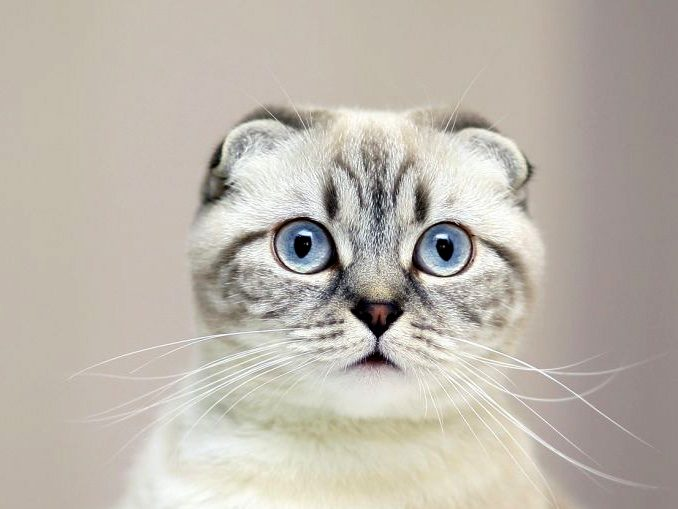
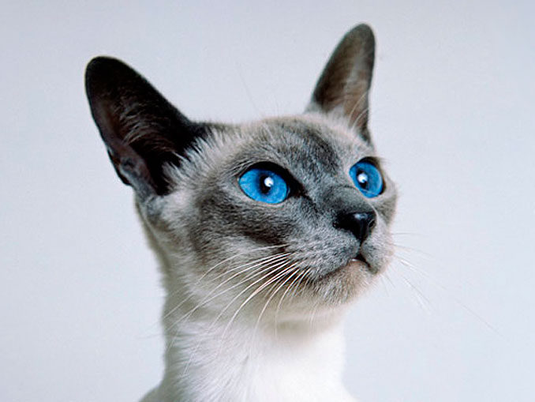

Обаятельные «сибиряки» с «сиамским» окрасом, шикарной гипоаллергенной «шубкой» и покладистым нравом – гордость российских фелинологов с берегов Невы… Котёнка именно этой породы завел себе Дмитрий Медведев, а Владимир Путин подарил такого премьер-министру Японии.

Одной из самых удивительных и загадочных пород считается мейн-кун – ласковый гигант с серьезным взглядом. Этих созданий называют «комнатными рысями», что неудивительно, т.к. они одни из самых крупных домашних кошек.

Во всём мире эту породу именуют «скоттиш-фолд», но нам привычней называть этих милых кошек «шотландскими вислоухими». Их «няшная» внешность никого не оставит равнодушным – такое создание сразу хочется взять на руки и затискать.

Без таких вот «плюшевых» комочков счастья не мыслят своего существования миллионы людей во всем мире. Эти аристократичные, дружелюбные, харизматичные и весьма чистоплотные питомцы уже долгое время являются одной из самых популярных кошачьих пород на планете.

Бенгальские кошки – невероятно красивые животные, которые сочетают в себе эффектную внешность диких хищников и покладистый характер домашних питомцев. Ну а главной «фишкой» этих созданий является «леопардовый окрас», за что их и зовут «домашними леопардами».

Сиамы – грациозные восточные красавцы и красавицы (сумевшие сохранить свои корни практически в первозданном виде) выделяются особым изяществом, темпераментным характером и некой миниатюрностью.

Среди множества пород есть одна, наделенная невероятным изяществом и грацией – это абиссинская кошка – существо умное, гибкое и ловкое. В ней присутствует некая загадочность и особая утонченность, а её внешность называют «божественной».

Эта порода выделяется особым серебристо-голубым окрасом и пронзительными зелеными глазами. Русские голубые кошки – «настоящие дворянки». Это грациозные и загадочные создания, радующие своих владельцев игривым, но послушным нравом.

Сибирские кошки считаются настоящими русскими красавицами за выразительные глаза, шикарную «шубку» и дружелюбный характер. Они давно завоевали сердца многих любителей кошек… очень давно – первые упоминания о них встречаются в XVI веке.

Ориентальная кошка, с первого взгляда, впечатляет своими ушами (по сравнению с телом и головой, они кажутся просто огромными). Это прекрасный друг и предавать его нельзя (кошка не поймет, если вы отдадите её другому человеку).